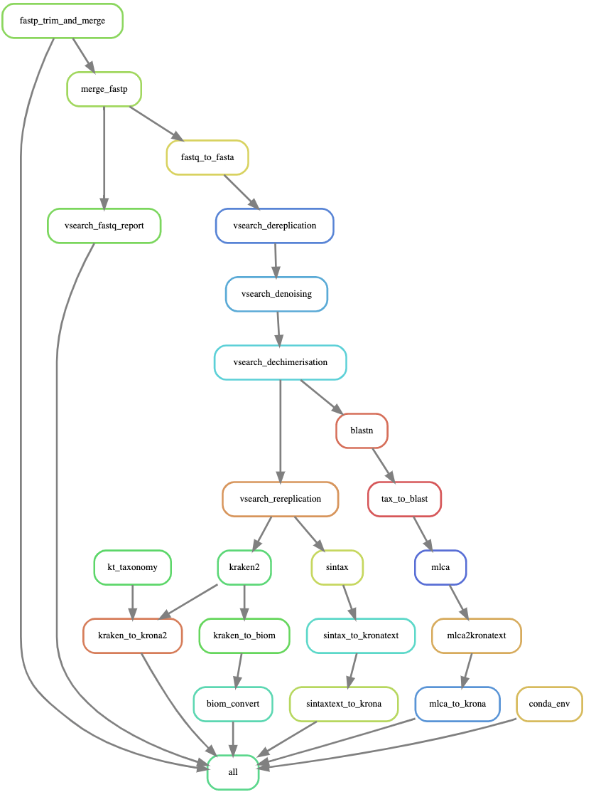

Advice on extending the workflow by adding tools, and other approaches.
Rationale
What is the best approach for your data analysis? Whatever you think is the answer you will need to gather evidence. Workflow systems like snakemake allow relatively easy addition and extension of the analyses. This is very useful in comparative analyses. If a new paper claims taxonomic assignment method Y is better than method X then you may wish to carry out both and compare the results, while standardising the other parts of your workflow.
Adding tools
Although familiarity with Snakemake is helpful, in many situations you may be able to add a tool by modifying an existing rule.
First make sure that your new method produces the results you expect when run at the command line. If it doesn't work at the command line it won't work in Snakemake.
Snakemake rules have 3 integral parts; input, output, and the command to turn the first into the second.
See the Snakemake Documentation
Common problems
Teaching and trouble-shooting Snakemake and bioinformatics are beyond the scope of this document. A couple of pointers however can save a lot of time.
1, Most problems are because you have a typo
2, If you have multiple lines of input or output each line except the last must finish in a comma. Look at the line that begins "file1"
3, Take note of the tabbed indentation structure as this can cause problems when incorrect.
4, The output of your rule must be added to the rule all in the snakefile.
5, Commands requiring " or {} must be escaped through duplication.
Eg, ls -l | awk '{if ($3 == "rahmu") print $0;}'
becomes
ls -l | awk '{{if ($3 == ""rahmu"") print $0;}}'
6, Here is an example rule.
rule test:
input:
file1 = "firstfile.fasta",
file2 = "secondfile.fasta"
output:
"allseqs.fasta"
shell:
"cat {input.file1} {input.file2} >> {output}"
The graph can help you understand
You should make a DAG to view the flow of information through your workflow. It is often possible to spot problems this way when you have added rules. It can also help in planning to add a rule, making you clearer on where the data comes from and where it goes.

To create a DAG (requires graphviz installed) use:
snakemake --rulegraph | dot -Tsvg > dag.svg
To create a DAG also showing individual samples use:
snakemake --dag | dot -Tsvg > dag.svg
Contributing your improvements to Tapirs
We would love to hear from you about the improvements you've made. A pull-request for your git branch would probably be best.
Why not help improve the documentation? A new and slightly different tutorial is always welcome.